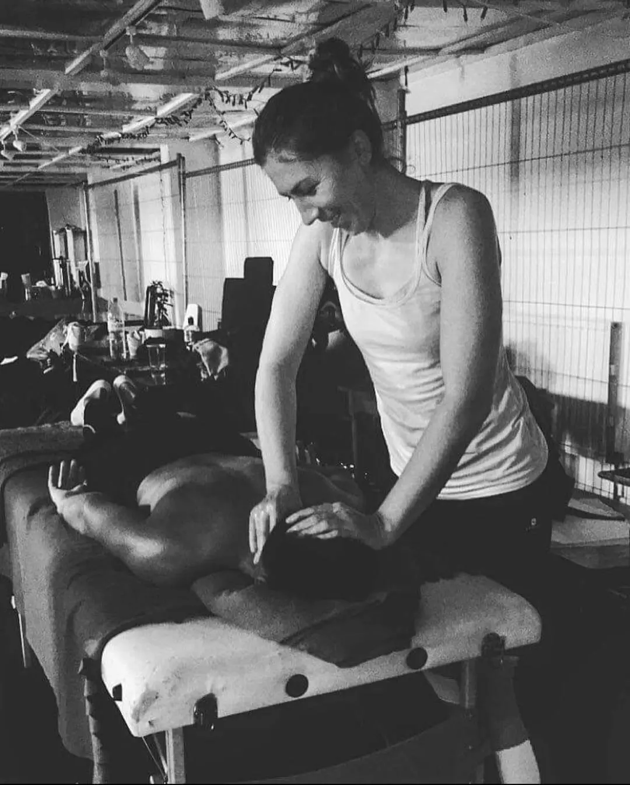

Hey, tu Kara Sun! Jestem dyplomowaną terapeutką z wieloletnim doświadczeniem w masażu oraz instruktorką jogi. Jestem pozytywnie nastawiona do życia i zainteresowana jego różnorodnością. Chęć pomagania innym jest moim atutem, która dodaje mi energii każdego dnia. Propagowanie zdrowego stylu życia stało się niemalże moją misją.
Po wielu eksperymentach i różnych doświadczeniach, praktykach, które pomogły mi lepiej poznać i zrozumieć samą siebie, zdecydowałam się na praktykowanie jogi. Inspiracją dla mnie była również obserwacja mojej bratniej duszy a właściwie zmiany jakie się w nim dokonywały podczas jego ściężki samopoznania. Dzięki ćwiczeniom, koncentracji, medytacji i świadomemu oddychaniu odblokowały się we mnie mechanizmy, które doprowadziły do mojego rozwoju fizycznego, umysłowego i duchowego. Ten proces inspiracji popchnął mnie do ukończenia 200-godzinnego kursu z zakresu Multistyle YTTC w standardzie Yoga Alliance w dalekich Indiach
Specjalizuję się również w masażu terapeutycznym całego ciała. Masaż jest moją pasją już od 14 lat, dzięki czemu cały czas poznaję ciało, umysł i ducha, a to wszystko razem daje ukojenie i równowagę. Koncentruję się na oczekiwaniach każdej osoby, z którą pracuję